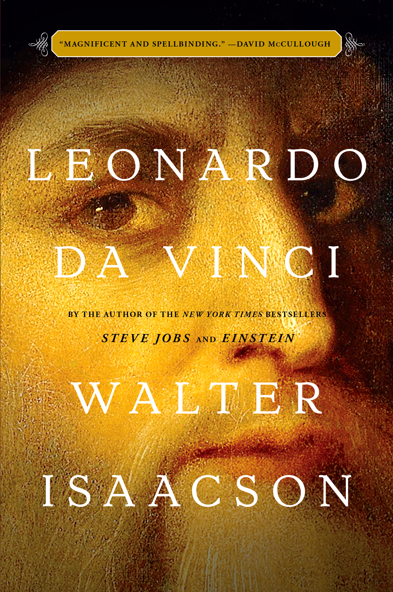

"Leonardo da Vinci"
- Read on 2019-03-19
- Rating: ️️️️️
- Format: 🎧 (17 hours 1 minute)
This was fantastic. Leonardo Da Vinci was clearly an amazing and inspiring individual. I know - you're not into Biographies. Get over it, and read this one. Even if you listen to the audio book (and look at the provided PDF of the various illustrations from the book), it's totally worth it.
With biographies, sometimes the results are the fault/credit of the biographer, and sometimes it's the subject themself. I've read Einstein and Steve Jobs, both by Isaacson. I thought he did well with one of those (and the other was... okay). With Da Vinci, I'm not sure how he did, since Da Vinci himself was so clearly incredible. When the person has died 500 years ago, and there is as much material as there was, and enough dissection of the material, I'm totally on board. I would have liked to have had more insight into Da Vinci's day-to-day mentality (or even activities), but I'm not sure the source materials are available for that.
- Prior: Into the Storm
- Next: Spoonbenders